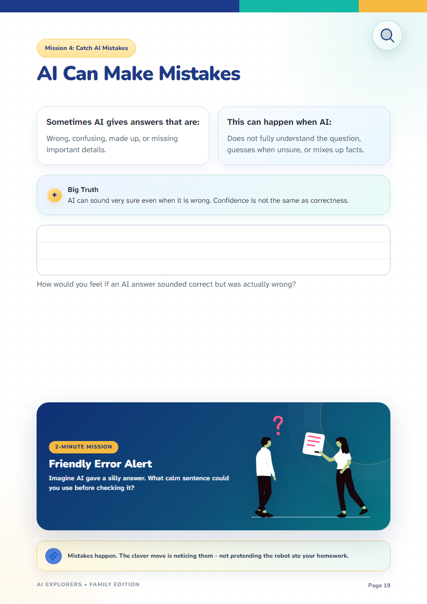
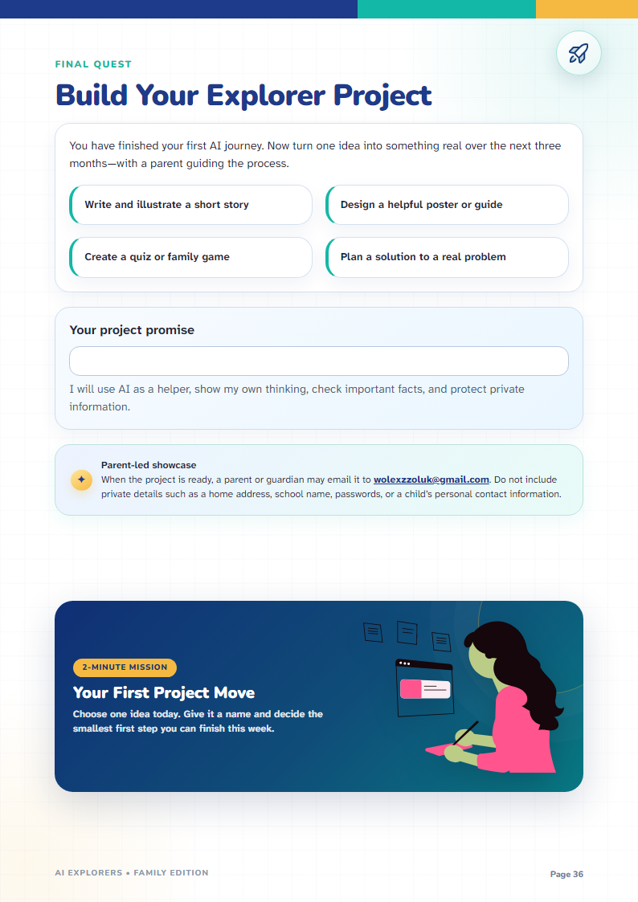
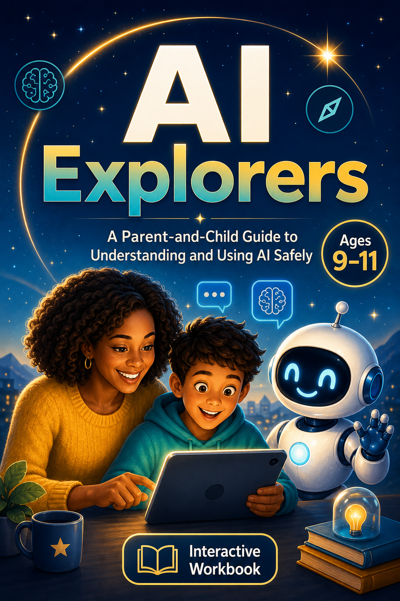

The safe first step into AI for ages 9-11
Your child will grow up with AI. Help them learn to think before they trust it.
AI Explorers is a premium parent-guided workbook that helps children understand what AI is, ask better questions, catch mistakes, protect private information and create responsibly - in six fun, practical missions.
- Ages 9-11
- Parent-Guided
- Fillable + Printable
- No Child Account Required
Start fromN4,500Complete library: N7,500
Private PDF delivery Secure checkout Built for phones, tablets and print



37-page interactive workbookAI is already in their world
The question is no longer whether children will meet AI. It is whether they will know when to question it.
AI can explain homework, generate stories and answer questions in seconds. It can also sound confident while being wrong, encourage shortcuts and collect information children do not realise is private.
Most parents know guidance matters. The difficult part is knowing what to say, what to demonstrate and how to make the conversation age-appropriate.
AI Explorers gives you a simple way to answer all four - together.
Will my child believe every confident answer?Will AI help them learn - or do the thinking for them?What information should they never share?How do I teach this if I am not an AI expert?
What changes
From “AI said it, so it must be true” to “Let me check that.”
Understand
Your child learns what AI is, what it can do and why it is not a person or a perfect source.
Question
They learn how clearer prompts produce more useful answers - and why their own judgement still matters.
Verify
They practise spotting strange answers, checking facts and asking an adult when something feels wrong.
Create Responsibly
They use AI for ideas, learning and creativity without copying, cheating or sharing private information.
You gain a repeatable language for guiding AI conversations at home - without needing a technical background.
Look inside before you buy
See exactly what your child will read, write, tick and build.
The AI Explorer journey
Six missions. One smarter, safer way to use AI.
- 01
Meet AI
Understand what artificial intelligence is and where children already see it.
- 02
Discover What AI Can Do
Explore strengths, limitations and the difference between a tool and a human thinker.
- 03
Ask Smart Questions
Build better prompts by adding clear topics, details, audiences and answer styles.
- 04
Catch AI Mistakes
Learn why AI can sound certain while being wrong and how to check important answers.
- 05
Learn and Create
Use AI for explanations, revision, stories and ideas while keeping the child’s own voice.
- 06
Stay Safe, Kind and Clever
Protect private information, avoid cheating and know when to involve a trusted adult.
The complete family kit
Everything you need to start the right AI conversations at home.
- 37-page full-colour fillable workbook
- Low-ink fillable edition
- Print-only backup editions
- Parent quick-start companion
- Two-part review quiz and answer guide
- Family AI rules poster
- Completion certificate
- Three-month Explorer Project pathway
This is not a disposable printable. It is a structured family AI-literacy experience designed to be completed, discussed and revisited.
Simple to start
No complicated setup. No child account. No AI expertise required.
Download
Complete the secure payment and receive the digital family kit.
Choose a Mission
Set aside approximately 15-20 minutes and read the short lesson together.
Talk and Complete
Let your child write, tick, question and explain before helping too quickly.
Build Something
Finish with an Explorer Project that turns one idea into a story, poster, quiz, guide or problem-solving plan.
Learning that leads to making
The workbook does not end with a quiz. It ends with something your child can build.
After completing the six missions, your child chooses one idea to develop over the next three months - with a parent guiding the process.
- Write and illustrate a short story
- Design a helpful poster or guide
- Create a quiz or family game
- Plan a solution to a real problem
A parent or guardian may submit the finished project for possible feedback or support. Selected projects may be considered, subject to parent communication and separate terms. Sponsorship is not guaranteed.
Built for guidance, not fear
You do not need to know everything about AI before you begin.
No technical background required
The explanations are written for children and parents learning together.
No child chatbot account required
Any tool demonstration can be done beside the child through an adult-managed account.
Safety is built into the journey
Privacy, fact-checking, honesty, kindness and adult guidance are repeated throughout the workbook.
The child still does the thinking
The activities teach children to use AI as a helper - not as a replacement for their brain, effort or creativity.
The workbook’s direction reflects widely recommended AI-literacy principles including critical judgement, privacy, responsible use and human oversight. No endorsement by external organisations is implied.
Choose the learning experience that fits your family
One strong workbook, or a more flexible family library.
Both options teach the same core AI habits. The complete library gives you more ways to use it at home, on screen or on paper.
Start here
AI Explorers Workbook
For a parent ready to begin with one beautiful, guided PDF.
N4,500- Full-colour 37-page fillable workbook
- Six parent-guided AI missions
- Works on phone, tablet, laptop or print
- Private PDF access after payment
Complete library
AI Explorers Family Library
For families who want flexible formats and a clear guide alongside the workbook.
N7,500For N3,000 more, you receive four separate private PDFs - no ZIP and no extraction needed.
- Everything in the Workbook option
- Parent Companion for confident guidance
- Low-ink edition for easier home printing
- Print edition for offline family sessions
One-family licence • Secure Paystack checkout • Private PDF library after verified payment
Need this for a class or school? View classroom licensing.A clear purchase, not a leap of faith
Designed for thoughtful parents who want guidance - not panic.
Age-specific
Every lesson is written specifically for ages 9-11.
Visible before purchase
Parents can look through selected real workbook pages before they decide.
Transparent
Page count, file formats, activity time, licence and delivery are clearly explained.
Questions parents ask
Everything you need to know before you start.
Do I need to understand AI before using this?
No. The workbook is designed for parents and children to learn together. The explanations are simple, practical and beginner-friendly.
Does my child need a chatbot account?
No. A child account is not required. If you choose to demonstrate an AI tool, stay beside your child, use an adult-managed account and follow that tool’s current age rules.
Is this a video course?
No. It is a premium fillable and printable digital workbook designed for short parent-and-child learning sessions.
Can my child type directly into the workbook?
Yes. The interactive PDF contains locked text fields and checkboxes. Typing inside the boxes does not move or distort the page design.
Can I print it?
Yes. The kit includes a full-colour version, a low-ink edition and print-only backups.
What device can we use?
Use a tablet, laptop or desktop PDF reader that supports interactive forms. You can also print the workbook and complete it with a pencil.
How long does it take?
Most missions take approximately 15-20 minutes. Families can complete the workbook at their own pace.
What happens after payment?
After payment is verified, the customer receives access to the digital download and an email containing the order and download information.
Can teachers or schools use it?
The family licence covers one household. A classroom licence is available for one teacher and up to 30 learners. Schools and organisations can request a custom licence.
Does purchasing guarantee project sponsorship?
No. A parent may submit the child’s completed Explorer Project for possible feedback or support. Any selection, feedback or support is discretionary and subject to separate communication and terms.
Is this an official UNICEF, UNESCO or OpenAI product?
No. AI Explorers is an independent educational product. External research may inform its safety and literacy principles, but no endorsement or partnership is implied.
The best time to build wise AI habits is before bad ones feel normal
Give your child a smarter, safer first step into AI.
Start six practical missions that help your child understand, question, verify, create and stay safe - with you beside them.
For ages 9-11 • Parent-guided • Instant digital access